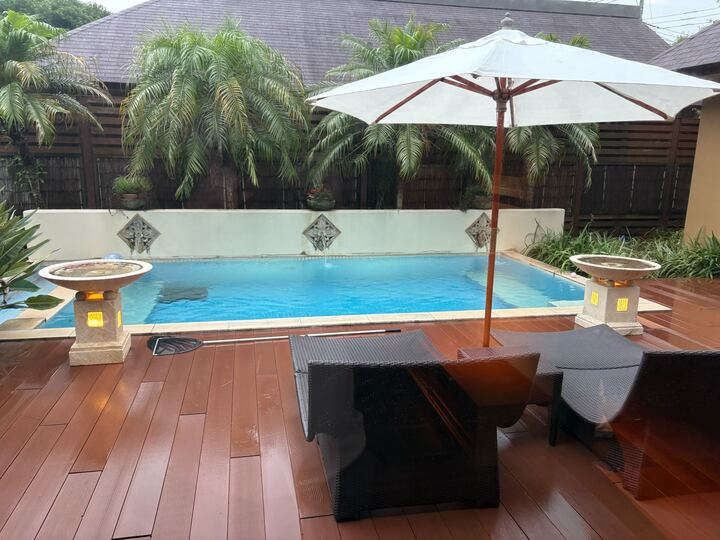
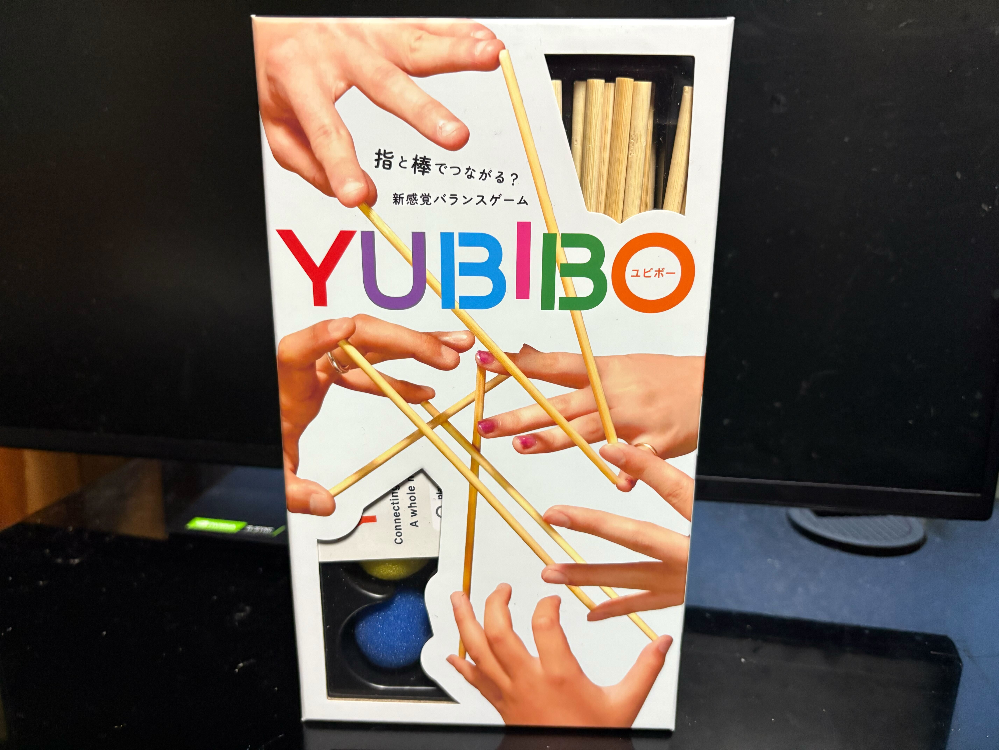

海のレジンパネル制作体験では
最初に縦向きかや横向きか
普通の海か夕日の海かなどを最初に決めました。
砂浜の色を最初に塗り、
海の色を自分で決めて、
薄い順に下から塗りました。
海の面にレジンを塗って、
その上に波を作りました。
最後に貝殻や瓶や海の生物のシールを貼って完成です。
完成品は一週間後ぐらいに届くらしいです。
朝☀️🌧️（一日目）
9時頃
起床し、荷物をまとめる。
10時頃
父のレンタカーに乗り、出発
当日の天気は雨だった。
昼🕛🌧️（一日目）
11時半頃
海ほたるに到着
海の見えるカフェレストランで昼食を食べた。
デザートにヨゴリーノ 海ほたる店でクレープを食べた。
12時半頃
海ほたるを出発
夕方🌆🌧️（一日目）
鴨川館到着
15時頃
鴨川館に到着した。
泊まる場所の名前は、
鴨川館別邸 ラ・松廬
チェックインを済ませ、部屋へ案内された
メインフロアが二階で、部屋が一階なので、
エレベーターで一階に降りた。
部屋ごとに名前があり、間取りも違う
今回泊まるのは、花の部屋だった。
部屋の様子
- 
部屋についても、まだ雨が降っていたので、
家族と部屋でボードゲームをして遊んでいた。
午後16時頃☀️
雨が止み、ボードゲームの片付けをして
プールに入り、家族でビーチボールで遊ぶ。
17時半頃
プールを出てて夕食を食べに、
2階のフロアに向かう
夜🌕🌧️（一日目）
18時頃
二階の板前ライブダイニング「MAIWAI」で
事前予約していた、鉄板焼きコースを食べた。
鉄板焼きコース
料理の感想
どの料理もとても美味しかった。
特に三品目のステーキと
五品目の和食が美味しかった。
20時頃
部屋に戻り、家族でボードゲームを遊んだ。
- 
21時頃
ボードゲームを遊び終え、各自風呂に入る。
23時頃
また家族でボードゲームで遊ぶ
そして時間が経ち・・・
深夜⭐️🌧️（二日目）
2時半頃
ボードゲームを遊んでいて
気づいたら2時半になっていたので
明日の着替えの準備と歯を磨く。
3時頃
就寝
朝☀️🌧️（二日目）
10時頃
起床
事前予約した洋食を食べる。
10時半頃
朝食を食べ終わり、部屋でくつろぐ
11半頃
12時にチェックアウトなので、
荷物をまとめ、出発の準備をする。
昼🕛🌧️（二日目）
12時頃
チェックアウトして、鴨川館を出発
15時頃
じゃらんに載っていた、Hauoli358という所で
海のレジンパネル制作体験をしました。
後日届いた作品
一枚目が私の作った作品です。
色のグラデーションが綺麗に出来ていて、
私的には、とても満足な完成度です。
二枚目が記念に先生が作ってくれた作品です。
最初に自分の作品の裏に名前を書いたので、
海斗のイニシャルのKがあるのだと思います。
16時半頃
海のレジンパネル制作体験を終えて、
今回の旅行の予定は全て終了したので
車に乗って家に帰ります。
夜🌕☀️（二日目）
18時半頃
荷物を置くために、一旦家に帰った
その後、レンタカーを返しに行った。
19時頃
川崎でレンタカーを返した。
夕食に焼肉が食べたくなり、
川崎の肉小僧 匠というお店で夕食を食べた。
21時半頃
夕食を食べ終え、帰宅して家に着いた
今回の旅行の感想
全体的にずっと雨が降っていて、
外で遊べる時間は限られていたけど、
十分楽しむことができました。
どこの食事もとても美味しくて、
久しぶりにクレープを食べれて嬉しかったです。
海のレジンパネル制作体験では、
完成度の高い作品を作れて嬉しかったです。
充実した二日間を過ごすことができました。